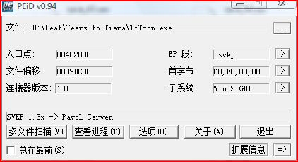
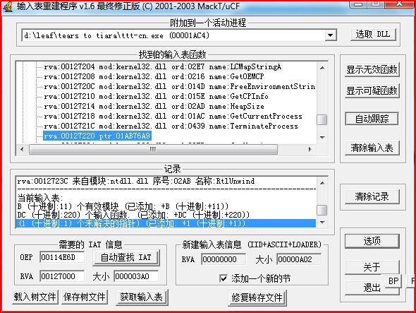

由于加了这个壳让很多人无法使用，病毒误报情况严重，而且运行效率也慢很多。鉴于此，决定把壳脱了，彻底解决病毒误报，提高运行效率。现把脱壳过程总结一下，作为教程发上来，供大家交流和参详。
工具篇:OllyICE, PEiD, LoadPE, ImportRec
脱壳篇:1. PEiD查壳, 是SVKP 1.3x -> Pavol Cerven，如图所示
2. 寻找OEP打开OD, 调试设置里忽略全部异常，SFX页设置“选择块方式跟踪真正的入口点”，确定后加载游戏程序文件。
由于SFX的设置，所以程序不会停在SVPK壳的入口点：
00802000 TtT-cn.<模块入口点> 60 pushad
00802001 E8 00000000 call 00802006
而是直接来到这个壳有名的特征异常处：
0012E37E 6285 1E220000 bound eax, qword ptr [ebp+221E]
0012E384 EB 02 jmp short 0012E388
下硬件执行断点: he GetModuleHandleA 然后shift+F9运行，约20秒后，程序断在GetModuleHandleA入口处。
77E692A5 kernel32.GetModuleHandleA 8BFF mov edi, edi
77E692A7 55 push ebp
接下来为了让脱壳过程更加简单直接和系统化，我们在到达OEP前先解决API的重定向。
2. 修复IAT删除前面的硬件断点，Alt+F9回到程序领空，ctrl+F 寻找SVPK壳的特征命令
cmp dword ptr [ebx], 2D66B1C5
来到这里:
019B5784 813B C5B1662D cmp dword ptr [ebx], 2D66B1C5
019B578A 0F84 62180000 je 019B6FF2
019B5790 813B 9404B2D9 cmp dword ptr [ebx], D9B20494
019B5796 0F84 AA1C0000 je 019B7446
。。。。。。。。。。。。。。。。。。。。。。。。。。。。。。。。。。。。
019B5838 813B B8B8B2FB cmp dword ptr [ebx], FBB2B8B8
019B583E 0F84 56320000 je 019B8A9A
019B5844 813B 8E5D2D57 cmp dword ptr [ebx], 572D5D8E
019B584A 0F84 86320000 je 019B8AD6
019B5850 60 pushad
019B5851 8B03 mov eax, dword ptr [ebx]
019B5853 8985 D8550200 mov dword ptr [ebp+255D8], eax
上面这段是壳加密关键API的地方，我们跳过这些代码不让他加密，方法是把 019B578A 的 je 019B6FF2 修改成 jmp 019B5850 直接跳到019B5850 的 pushad处。
Ctrl+S 继续搜索第二处特征码
mov dword ptr ds:[edi],eax
popad
来到这里：
019B5B4F 8907 mov dword ptr [edi], eax
019B5B51 61 popad
我们颠倒这两句为
019B5B4F 61 popad
019B5B50 8907 mov dword ptr [edi], eax
经过以上处理，壳对API的重定向已经几乎形同虚设。
然后F9一下就直接停在程序的OEP了
00514E14 90 nop
00514E15 90 nop
00514E16 90 nop
。。。。。。。。。。。。。。。。。。。。。。
00514E6A 90 nop
00514E6B 90 nop
00514E6C 90 nop
00514E6D . E8 774C0000 call 00519AE9 ; SFX 代码真正入口点
00514E72 . 59 pop ecx
00514E73 . 85C0 test eax, eax
00514E75 . 75 08 jnz short 00514E7F
00514E77 . 6A 1C push 1C
00514E79 . E8 C3000000 call 00514F41
3. 修补Stolen code如大家所见，程序开头处被偷换了N多代码，数了数从00514E14 到00514E6C 共有0x58个nop, 即88个字节的代码被偷换了~ORZ
这么大的偷换量还原起来还是有一定的难度地。幸运的是，我们知道这是汉化版程序，是从日文原版修改来的，所以修复程序OEP的Stolen code可以直接拿日文原版的来用。
OD打开日文版程序复制OEP处88个字节:
00514B94 TtTjp.<模块入口点> /$ 55 push ebp
00514B95 |. 8BEC mov ebp, esp
00514B97 |. 6A FF push -1
00514B99 |. 68 104E5300 push 00534E10
00514B9E |. 68 F04C5100 push 00514CF0 ; SE 处理程序安装
00514BA3 |. 64:A1 00000000 mov eax, dword ptr fs:[0]
00514BA9 |. 50 push eax
00514BAA |. 64:8925 00000000 mov dword ptr fs:[0], esp
00514BB1 |. 83EC 58 sub esp, 58
00514BB4 |. 53 push ebx
00514BB5 |. 56 push esi
00514BB6 |. 57 push edi
00514BB7 |. 8965 E8 mov [local.6], esp
00514BBA |. FF15 24625200 call near dword ptr [<&KERNEL32.GetVersion>; kernel32.GetVersion
00514BC0 |. 33D2 xor edx, edx
00514BC2 |. 8AD4 mov dl, ah
00514BC4 |. 8915 44DE7A00 mov dword ptr [7ADE44], edx
00514BCA |. 8BC8 mov ecx, eax
00514BCC |. 81E1 FF000000 and ecx, 0FF
00514BD2 |. 890D 40DE7A00 mov dword ptr [7ADE40], ecx
00514BD8 |. C1E1 08 shl ecx, 8
00514BDB |. 03CA add ecx, edx
00514BDD |. 890D 3CDE7A00 mov dword ptr [7ADE3C], ecx
00514BE3 |. C1E8 10 shr eax, 10
00514BE6 |. A3 38DE7A00 mov dword ptr [7ADE38], eax
00514BEB |. 6A 01 push 1 ; 复制到这里
00514BED |. E8 774C0000 call 00519869
二进制复制粘贴覆盖那些nop得到
00514E14 55 push ebp ; OEP
00514E15 8BEC mov ebp, esp
00514E17 6A FF push -1
00514E19 68 104E5300 push 00534E10
00514E1E 68 F04C5100 push 00514CF0
00514E23 64:A1 00000000 mov eax, dword ptr fs:[0]
00514E29 50 push eax
00514E2A 64:8925 00000000 mov dword ptr fs:[0], esp
00514E31 83EC 58 sub esp, 58
00514E34 53 push ebx
00514E35 56 push esi
00514E36 57 push edi
00514E37 8965 E8 mov dword ptr [ebp-18], esp
00514E3A FF15 24625200 call near dword ptr [526224] ; 注意这个API是GetVersion
00514E40 33D2 xor edx, edx
00514E42 8AD4 mov dl, ah
00514E44 8915 44DE7A00 mov dword ptr [7ADE44], edx
00514E4A 8BC8 mov ecx, eax
00514E4C 81E1 FF000000 and ecx, 0FF
00514E52 890D 40DE7A00 mov dword ptr [7ADE40], ecx
00514E58 C1E1 08 shl ecx, 8
00514E5B 03CA add ecx, edx
00514E5D 890D 3CDE7A00 mov dword ptr [7ADE3C], ecx
00514E63 C1E8 10 shr eax, 10
00514E66 A3 38DE7A00 mov dword ptr [7ADE38], eax
00514E6B 6A 01 push 1
00514E6D . E8 774C0000 call 00519AE9 ; SFX 代码真正入口点
注意stolen code中有个API的调用也被偷换了 即00514E3A call near dword ptr [526224]
这句查看日文版应该是GetVersion。我们需要手动修复之。
4. dump程序，重建IAT先运行ImportRec, 选择游戏进程，在OEP 处先填入SFX得到的入口VA地址 00114E6D = 00514E6D - 00400000, 点击自动查找IAT, 获取输入表, 点击显示无效函数发现只有一个地址是无效的，如图所示:
那么，他到底是什么呢？ 呵呵 经验告诉我们，SVKP有一个特征API是无法修复的，那就是: "ExitProcess"， 这个API的位置正好就在图上 TerminateProcess之后。我们双击这个地址，手动输入ExitProcess即可全部修复完毕。这里顺便在列表中查看一下GetVersion的地址，得到RVA是 00127224 即 VA 00527224
我们再来到OD的那句需要修改的00514E3A 处，改为 call near dword ptr [527224]，现在这个API也正常显示了。再请出LoadPE, 先修正下镜像大小，然后完整转存。
接下来我们修复IAT，刚才那个ImportRec窗口大家还没有关吧，呵呵~~
把OEP的地址改为00114E14 (即修补偷换代码后的真正的OEP，第一个nop的地址), 然后直接点击修复转存文件(添加新段打钩)。
这样我们就一步到位的把脱壳和修复完成了。双击修复后的程序运行一切正常。
优化篇:5. 脱壳后的优化若你不需要优化，其实也没有什么问题，只是这个脱壳后的文件体积比较大，有4.15M，所以接下来我们做下简单的优化。说到优化，其实也可以一步到位，在刚才最后一步转存完毕，但还没有修复IAT的时候，我们先把转存的文件用LoadPE的PE编辑器打开，把区段表中最后一个区段.svkp删掉(或者在刚才转存时选择部分转存)，这个是壳的代码段，我们是不需要的。保存后，再对这个文件修复IAT。修复后双击文件还是正常运行的。这次得到的文件尺寸和刚才相比变化不大，只是去掉了壳的代码(最好把他们去掉，因为这个段即没有用，而且又会让很多杀软兴奋的 ~~)。现在可以使用LoadPE的重建功能重建PE了。重建后大小优化89%，尺寸是3.7M，运行一切正常，杀软也不再误报了。
至此KSVP脱壳优化步骤完毕。关于进一步对文件尺寸和结构的优化问题这里就不多说了，大家有兴趣的可以深入研究。
kaien
2010/09/08
[ 此帖被kkaien在2010-09-08 13:28重新编辑 ]